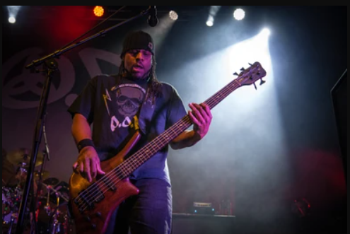
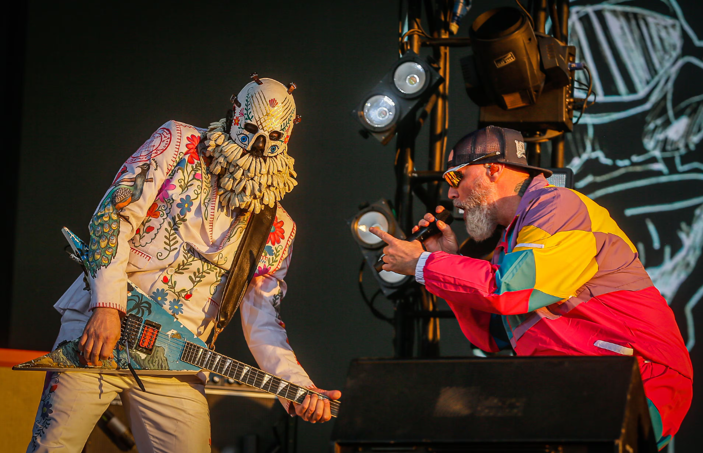
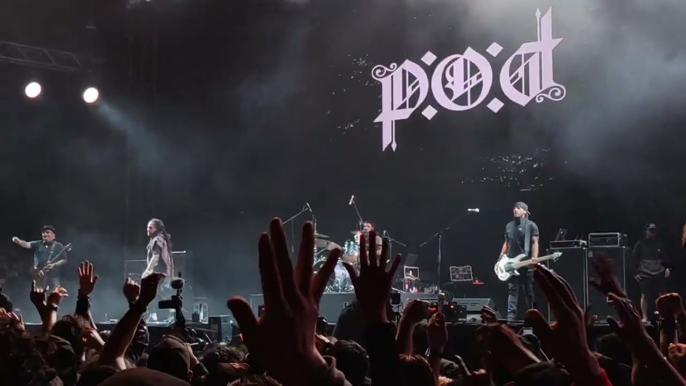

Lo que disfruto
- Tocar guitarra
-
Aprender bajo eléctrico

Aprender bajo eléctrico es uno de mis nuevos desafíos musicales. - Escuchar nu metal
Ignacio Benjamín


Disfruto aprender cosas nuevas y la música es uno de mis pasatiempos favoritos. Tocar guitarra me permite disfrutar las canciones desde otra perspectiva y actualmente estoy aprendiendo bajo eléctrico como un nuevo desafío.
Me gusta descubrir nuevos sonidos, practicar y seguir aprendiendo poco a poco.
